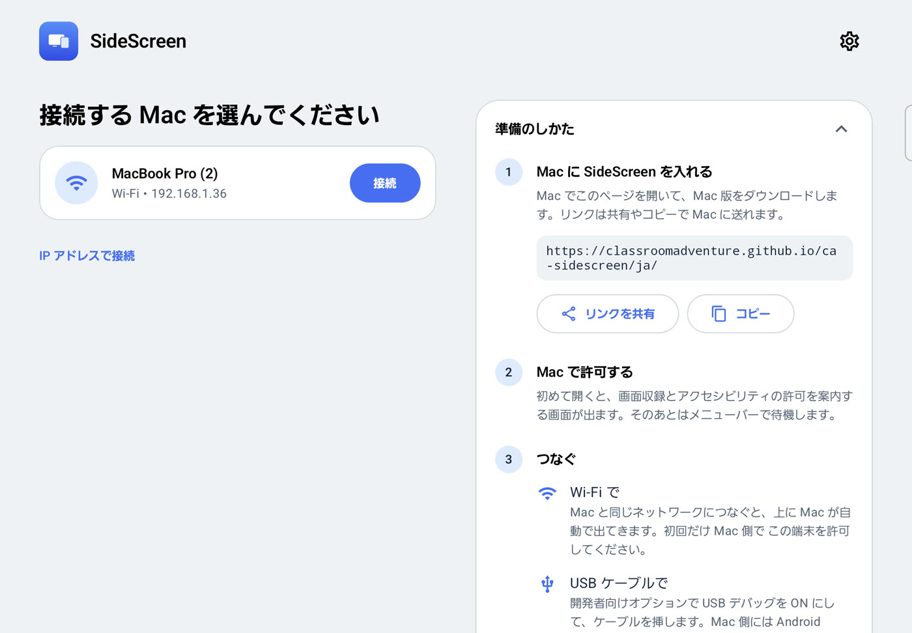
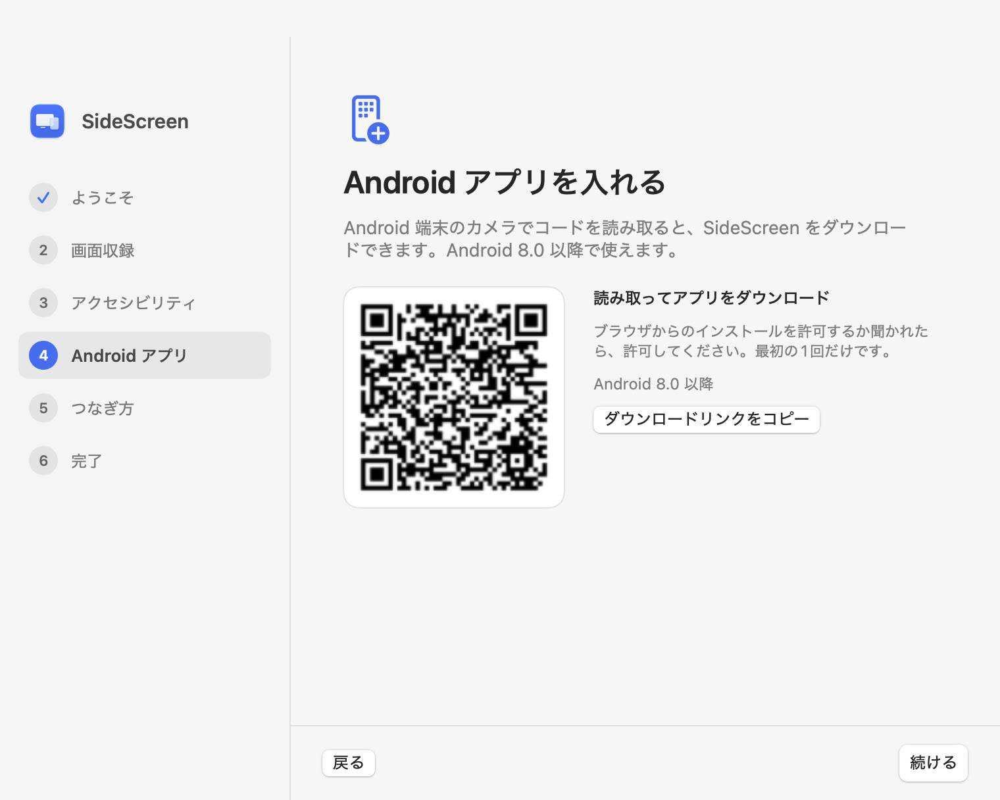
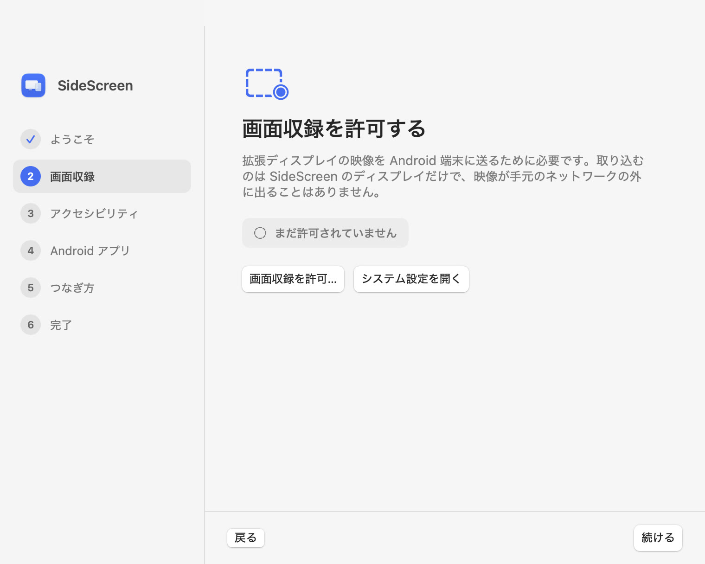
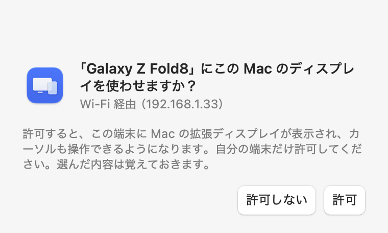
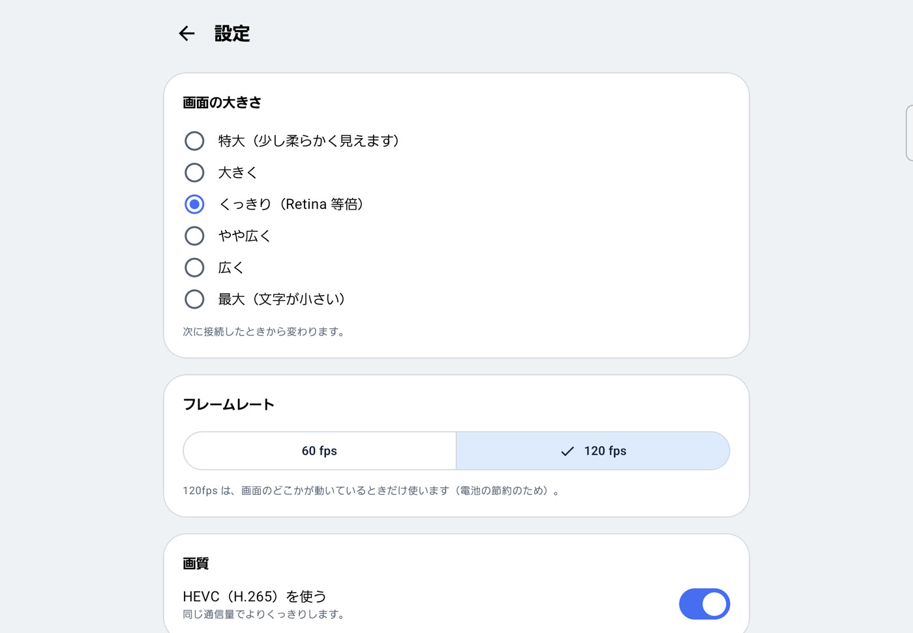

Android を、Mac のサブディスプレイに。
SideScreen は、Android のスマホ・タブレット・折りたたみを Mac のサブディスプレイ（拡張ディスプレイ）にする無料アプリです。iPad の Sidecar のように、USB ケーブルでも Wi-Fi でもつながり、ウィンドウを移してタッチやペンで操作できます。
無料・オープンソース（MIT）。macOS 14 以降、Android 8.0 以降。
ケーブルでも、Wi-Fi でも
どちらでも同じディスプレイとして使えます。その場にあるほうを選んで、いつでも切り替えられます。
USB ケーブル
~20ms
キャプチャから表示まで
ケーブルを挿すと自動で始まります。使いながら充電もできます。端末の USB デバッグと、Mac 側の Android platform tools が必要です。
同じ Wi-Fi
~16ms
キャプチャから表示まで
Mac がアプリの一覧に自動で出てきます。映像は欠けても直せる UDP で送り、回線の状態に合わせて画質を自動で調整します。
| キャプチャ＋エンコード | 通信 | デコード | 合計 | |
|---|---|---|---|---|
| USB | 7 ms | 10 ms | 3 ms | 20 ms |
| Wi-Fi | 7 ms | 5 ms | 3 ms | 16 ms |
Galaxy Z Fold と M4 Pro の MacBook Pro で、画面が動いているときの実測です。3本指タップで自分の環境の数値も見られます。
本物のディスプレイのように
macOS からは独立したモニターとして見えるので、ディスプレイについて知っていることがそのまま使えます。
- カーソルが指に遅れない
- カーソルは端末側で描くので、触った瞬間に動きます。映像が追いつくのを待ちません。
- Retina でくっきり
- 端末の解像度そのままで描きます。読みやすく大きくすることも、広く使うこともできます。
- 折りたたみにも対応
- 開く・閉じる・回すと、つなぎ直さずに Mac 側の解像度が合わせて変わります。
- タッチとペン
- タップでクリック、ドラッグで選択、2本指で慣性スクロール。ペンはホバーでカーソルを動かせます。
- 動くときは滑らか、止まれば静か
- 対応画面では、何かが動いている間だけ最大 120Hz。止まっていれば端末側でリフレッシュレートを下げて電池を節約します。
- Android ならどの端末でも
- Android 8.0 以降のスマホ・タブレット・折りたたみ。対応端末では HEVC、それ以外は H.264 を使います。
実際の画面
Mac で短いセットアップをしたら、あとは Android でタップするだけです。





数分ではじめられます
Mac アプリを一度入れて、使いたい端末それぞれに Android アプリを入れます。
Mac
- SideScreen-mac.zip をダウンロードして展開し、SideScreen をアプリケーションに移します。
- 一度開きます。初回は macOS にブロックされるので、システム設定 → プライバシーとセキュリティ で「このまま開く」を押します。
- セットアップガイドが開き、「画面収録」と「アクセシビリティ」の許可を案内します。Android アプリの QR コードもここに出ます。
Android
- 端末で SideScreen-android.apk をダウンロードしてインストールします。
- USB で使うなら、開発者向けオプション → USB デバッグ を ON にし、ケーブルをつないだら Mac を許可します。Wi-Fi だけなら不要です。
- SideScreen を開きます。USB なら自動でつながります。Wi-Fi なら一覧の Mac をタップし、初回だけ Mac で「許可」を押します。
USB で使う場合は、Mac に Android platform tools も必要です: brew install android-platform-tools
知っておいてほしいこと
macOS の非公開 API を使っています。仮想ディスプレイの作成には CGVirtualDisplay を使っていて、BetterDisplay や DeskPad と同じ方法です。将来の macOS アップデートで、対応するまで動かなくなる可能性があります。
Mac アプリはまだ Apple の公証を受けていません。そのため初回起動で確認を求められます。ソースから自分でビルドすることもできます。
画面がネットワークの外に出ることはありません。Mac から端末へ、ケーブルか手元の Wi-Fi で直接送ります。アカウントもサーバーもありません。
よくある質問
Android タブレットを Mac のサブモニターにできますか？
できます。SideScreen は Mac に本物の拡張ディスプレイを作り、それを Android のタブレット・スマホ・折りたたみに映します。ウィンドウを移したり、システム設定 → ディスプレイ で配置を変えたり、普通のモニターと同じように使えます。
Sidecar を Android で使うことはできますか？
Apple の Sidecar は iPad 専用です。SideScreen は同じことを Android 端末でできるようにするアプリで、USB でも Wi-Fi でも、タッチ操作付きの拡張ディスプレイとして使えます。
ワイヤレス（無線）でも使えますか？
使えます。Mac と Android が同じ Wi-Fi につながっていれば、アプリに Mac が自動で出てきます。Wi-Fi での遅延は実測で約 16ms です。USB ケーブルでもつながり、使いながら充電もできます。
どの Android 端末で使えますか？
Android 8.0 以降のスマホ・タブレット・折りたたみなら使えます。Galaxy Tab、Galaxy Z Fold、Pixel、Xperia、AQUOS、Xiaomi Pad などです。HEVC のハードウェアデコーダがある端末では、より高画質になります。
同じ Wi-Fi の他の人に画面を見られませんか？
見られません。初めての端末が Wi-Fi でつないできたときは Mac で許可を確認し、許可した端末だけがつながります。映像は Mac から端末へ直接送られ、ネットワークの外には出ません。
無料ですか？
無料です。MIT ライセンスのオープンソースで、アカウント登録・広告・サーバーはありません。